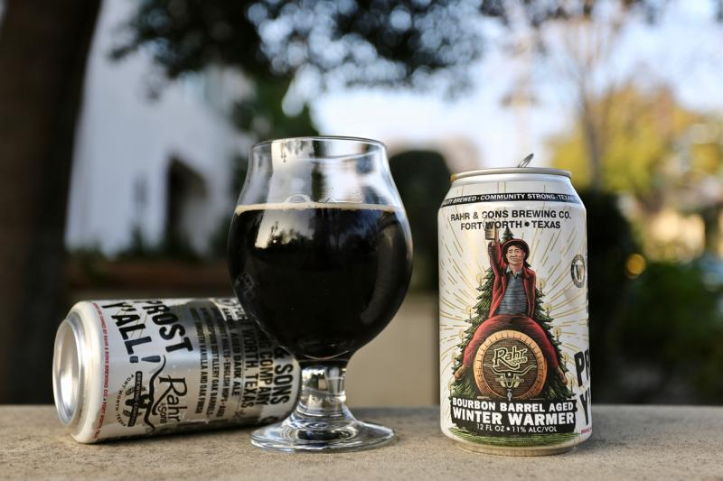

HOME
ALES
Bourbon Barrel Aged Winter Warmer
Rahr & Sons Brewing Company
English dark ale aged in bourbon Barrels of fresh american oak. Dark malts, english hops with a sweet, smooth vanilla and oak finish.
Fritz and Erin Rahr started the craft beer movement in North Texas, as they founded Rahr & Sons Brewing Co. in the fall of 2004. Since then, Rahr & Sons has exponentially grown its brewing capacity from 2,000 barrels a year to more than 20,000 barrels a year. The craft brewery now distributes to Texas, Oklahoma, Kansas and Nebraska.
Check out their site HERE 